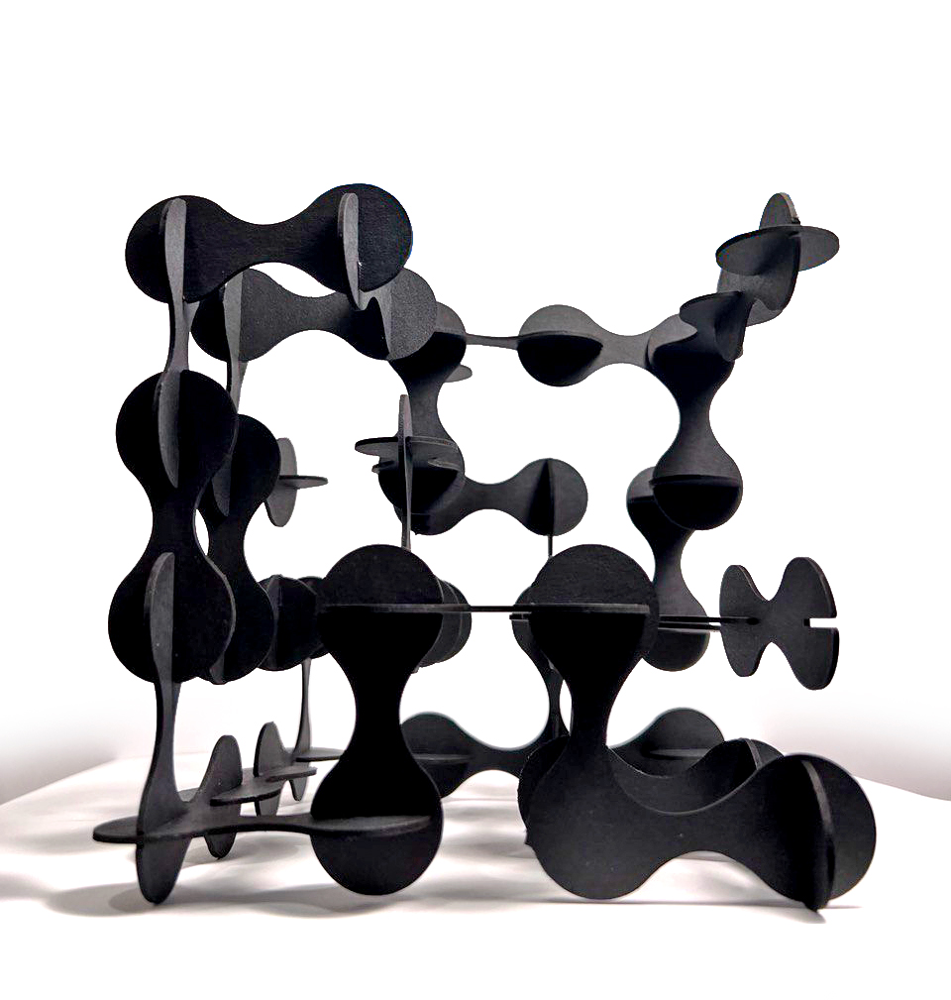
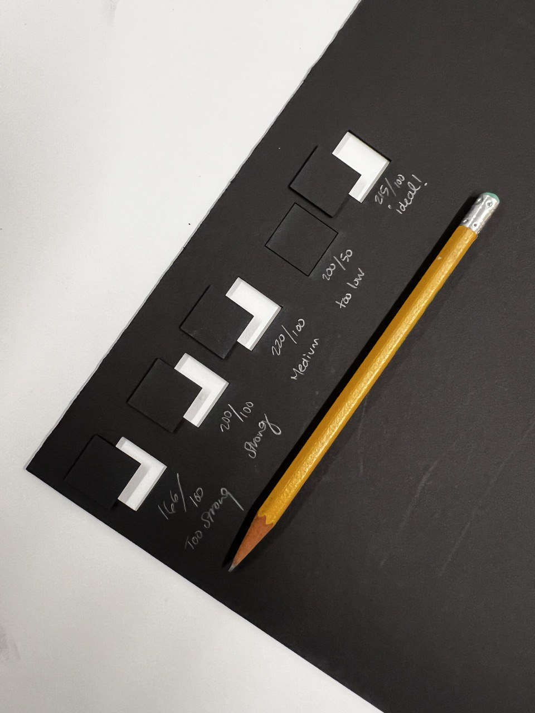
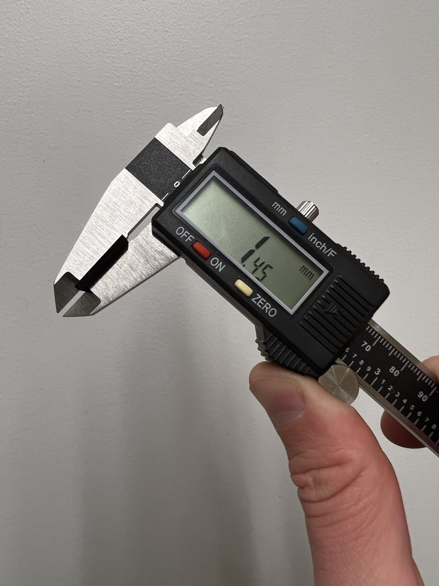
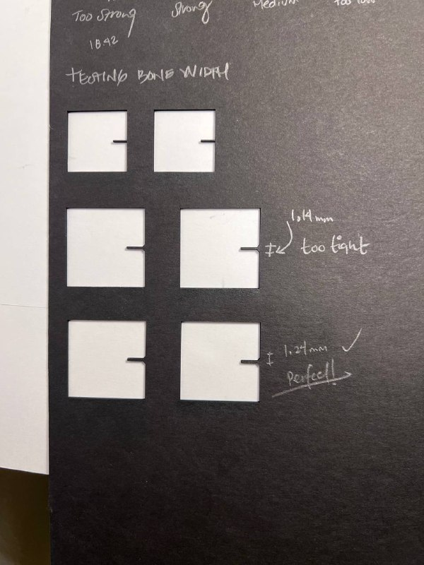
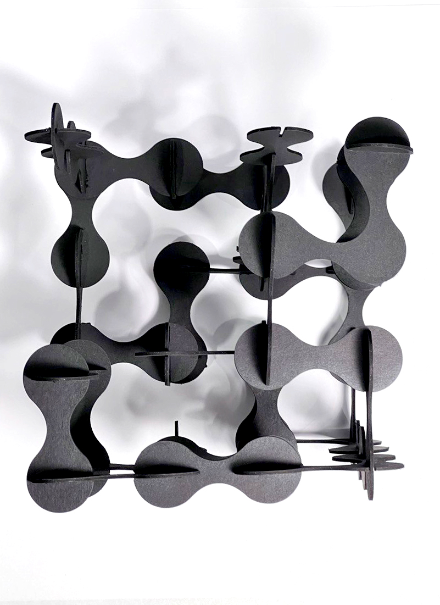

A01: Laser Cut!
Assignment Files:
For our first assignment, we got familiarized with the usage of a laser cutter by calibrating its power and speed, and cutting simple shapes in Rhinoceros. This is my final product:

1. First, we need to understand the relationship between the laser cutter's power, its speed and the material we have. I am using a very thin black cardboard/paperboard, howeve, its dense. It might burn quickly, but it might not go throught that easily. I did a series of tests to determine ideal settings for the glowforge.

2. The next step was to figure out how the shapes would be adecuately assembled. I discovered that making the aperture the same width as your material does not necesarily guarantee the best results - hence, I did a few tests to determine appropiate width for this particular cut.


3. Design - for the next step, I started working with Rhino. I wanted something modular that belonged to a grid, regardless of which combination you put the pieces at.
 - Rhinoceros 7 Commercial - [Top].png)
4. Next, I needed to create 3 to 4 variations that would allow to manage the pieces around the sculpture. I created a a few shapes by joining some of this grids with organic moves, as "teardrops" that are combining each circle with the one next to it.
 - Rhinoceros 7 Commercial - [Top].png)
 - Rhinoceros 7 Commercial - [Top].png)
5. After having an adecuate number of modules drafted. I removed them from the grid and organized them for laser cutting in a 11.5 x 20" sheet (the size of our cardboard.)
 - Rhinoceros 7 Commercial - [Top].png)
6.Finally, I cut all pieces and assembled them in a 4x4 grid, attempting to create a simi-completed cube with cantilevers and other interesting spaces in between.
